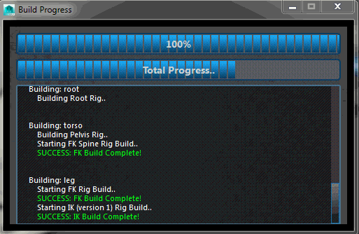

ART_BuildProgressUI¶
Author: Jeremy Ernst
-
class
Interfaces.ART_BuildProgressUI.ART_BuildProgress_UI(mainUI)[source]¶ This class kicks off building all of the rigs for the modules. It displays an interface that shows progress and displays information about the rig build.
It exports skin weights, rebuilds the skeleton in rig pose, imports skin weights, runs any pre-script, calls on each module’s rig building code, sets up rig parenting and hierarchy, and finally runs any post-script.
-
__init__(mainUI)[source]¶ Instantiates the class, getting the QSettings and then calling on the function to build the UI for the tool.
Parameters: mainUI – The instance of the Rig Creator UI that this class was called from. See also
ART_BuildProgressUI.buildUI
-
buildRigs()[source]¶ First, create a driver skeleton which the rig will build upon, then calls on each module’s buildCustomRig function, which will build the rig for that module, then sets up rig parenting and hiearchy once all modules are built.
Lastly, calls on the function to execute a post script if one was given during publish.
See also
riggingUtils.createDriverSkeleton(), ART_BuildProgressUI.postScript()
-
buildUI()[source]¶ Builds the interface, which doesn’t really have any user-interaction, but is there to display information about the progress of the rig build. There are two QProgressBars that show current module build progress and total build progress, then a QTextEdit which outputs information about what the build process is currently working on.
After the interface is built, it sets the rig pose on the joints of each module.
-
completeBuild()[source]¶ Locks down all network nodes, saves the scene, and alerts user that the rig build is complete.
-
executeScript(scriptPath)[source]¶ Takes a given script (mel or python) and runs it.
Parameters: scriptPath – location of the script to be evaluated and ran. Returns: Whether or not the execution of the script failed or not. See also
ART_BuildProgressUI.preScript(), ART_BuildProgressUI.postScript()
-
exportWeights()[source]¶ Exports all skin weights of meshes that have skinClusters to a .weights file (JSON). It also has functionality to deal with morph targets, making sure they are preserved when history on the meshes is deleted.
See also
riggingUtils.export_skin_weights()
-
importWeights()[source]¶ Imports skin weights back onto the asset geometry after having rebuilt the skeleton in rig pose. Then calls on ART_BuildProgressUI.preScript().
See also
ART_BuildProgressUI.preScript()
-
postScript()[source]¶ If there is a post-script to run, this will call on ART_BuildProgressUI.executeScript() to run the post-script. Then it will call on ART_BuildProgressUI.completeBuild() which wraps up the build process and alerts the user the build is done.
Note
Post-Scipts are used if you ever want to do something to your character after the rig gets built. An example usage would be adding custom rigging to joints or controls in the scene, setting up custom relationships or set-driven keys, etc.
See also
ART_BuildProgressUI.executeScript(), ART_BuildProgressUI.completeBuild()
-
preScript()[source]¶ If there is a pre-script to run, this will call on ART_BuildProgressUI.executeScript() to run the pre-script. Then it will call on ART_BuildProgressUI.buildRigs() to build each module’s rigs.
Note
Pre-Scipts are used if you ever want to do something to your character before the rig gets built. An example usage would be adding IK joints for UE4 in a pre-script, as you don’t want or need controls for those IK joints, and setting up those constraints.
See also
ART_BuildProgressUI.executeScript(), ART_BuildProgressUI.buildRigs()
-
rebuildSkeleton()[source]¶ Rebuilds the skeleton in rig pose, meaning that all joint rotations will be zeroed in rig pose rather than model pose. This ensures clean rigging.
Lastly, calls on ART_BuildProgressUI.importWeights() to reimport weighting back onto the meshes.
See also
riggingUtils.buildSkeleton(), ART_BuildProgressUI.importWeights()
-